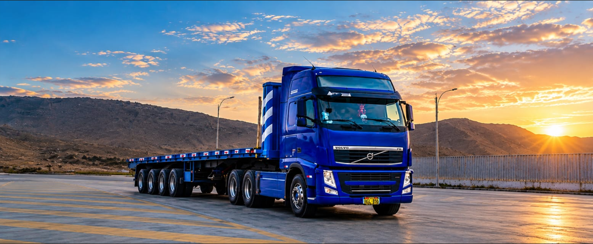
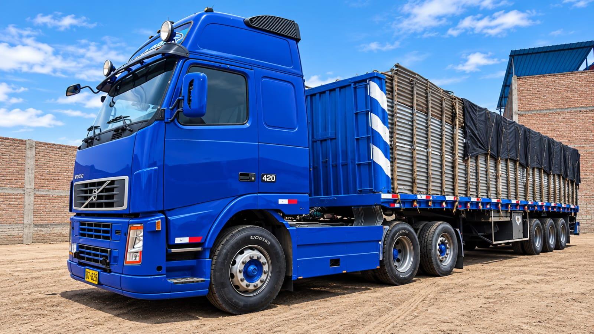
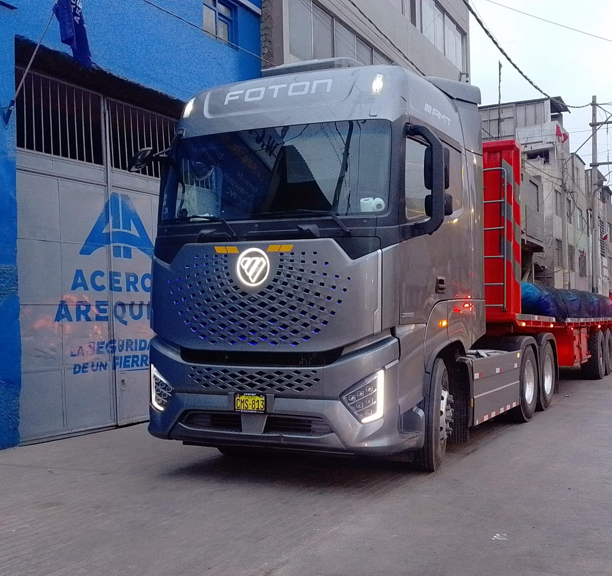
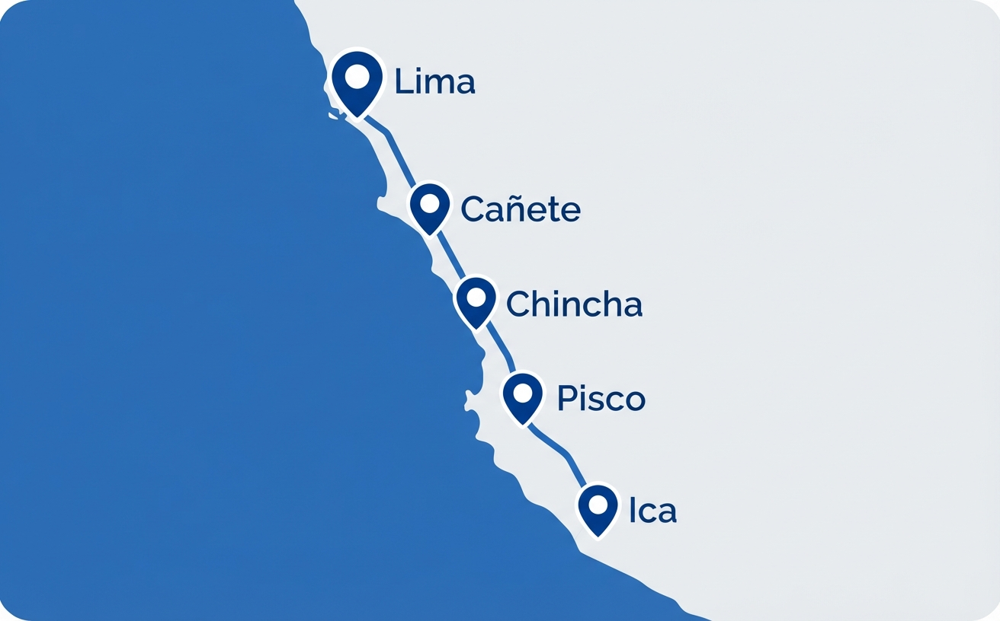
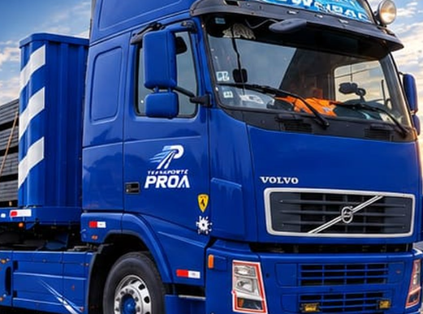

Compromiso
Orientación al cumplimiento de las necesidades de cada cliente.

Servicios de transporte de cargaTransporte terrestre de carga pesada con soluciones confiables para cada destino.
Solicitar cotizaciónDesde 2008, en Transporte Proa S.A.C. brindamos soluciones de transporte terrestre de carga, priorizando la seguridad, eficiencia y puntualidad. Trabajamos con transportistas asociados para ofrecer un servicio confiable y adaptado a las necesidades de nuestros clientes.
Conocer la empresa
Orientación al cumplimiento de las necesidades de cada cliente.
Compromiso con el cuidado de la carga durante la prestación de cada servicio.
Atención puntual y organizada de los horarios y compromisos acordados.
Conoce cómo trabajamos y descubre nuestra propuesta de transporte.
DESCUBRE NUESTRO SERVICIO
Nuestra cobertura comprende importantes localidades del corredor sur de la costa peruana, permitiéndonos atender las necesidades de transporte de nuestros clientes en diferentes destinos.

